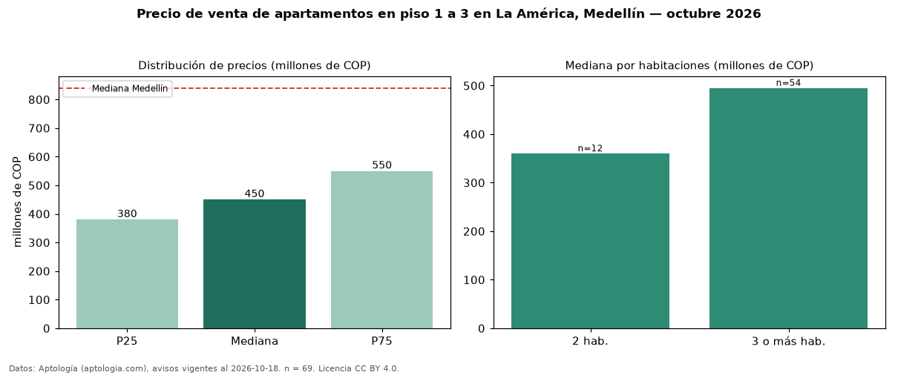

Precio de venta de apartamentos en piso 1 a 3 en La América, Medellín — octubre 2026
COP 450 millones es el precio mediano de apartamentos en piso 1 a 3 en venta en La América, Medellín (n = 69 avisos). Prácticamente coincide con la mediana de todos los apartamentos en venta de La América (COP 460 millones, n = 196); este segmento reúne el 35 % de esos avisos. Por metro cuadrado, la mediana es COP 5,22 millones/m² (n = 69), 10 % por debajo del conjunto de referencia (COP 5,78 millones/m²). El área mediana anunciada es 86 m². El segmento con más oferta es el de 3 o más habitaciones (54 avisos, mediana COP 495 millones); pasar de 2 habitaciones a 3 o más habitaciones cambia la mediana +38 %. La administración mediana declarada es COP 135.000 al mes (n = 18). El estrato más frecuente es 4 (70 % de los avisos con estrato). La mediana de todos los apartamentos en venta de Medellín es COP 840 millones (−46 % de diferencia). Datos: Aptología (aptologia.com), CC BY 4.0 — https://www.aptologia.com/venta/medellin/la-america. Archivos: PDF, CSV con las cifras y gráfica PNG.

| Avisos únicos | 69 |
|---|---|
| Percentil 25 | COP 380.000.000 |
| Mediana | COP 450.000.000 |
| Percentil 75 | COP 550.000.000 |
| Mediana por m² | COP 5.223.880 |
Fuente: avisos vigentes de portales inmobiliarios recopilados por Aptología, deduplicados (mínimo 30 avisos únicos por celda). Precios pedidos, no cerrados. Fecha: 2026-10-18.